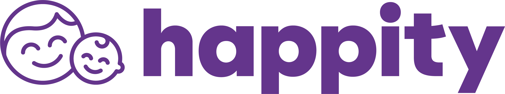
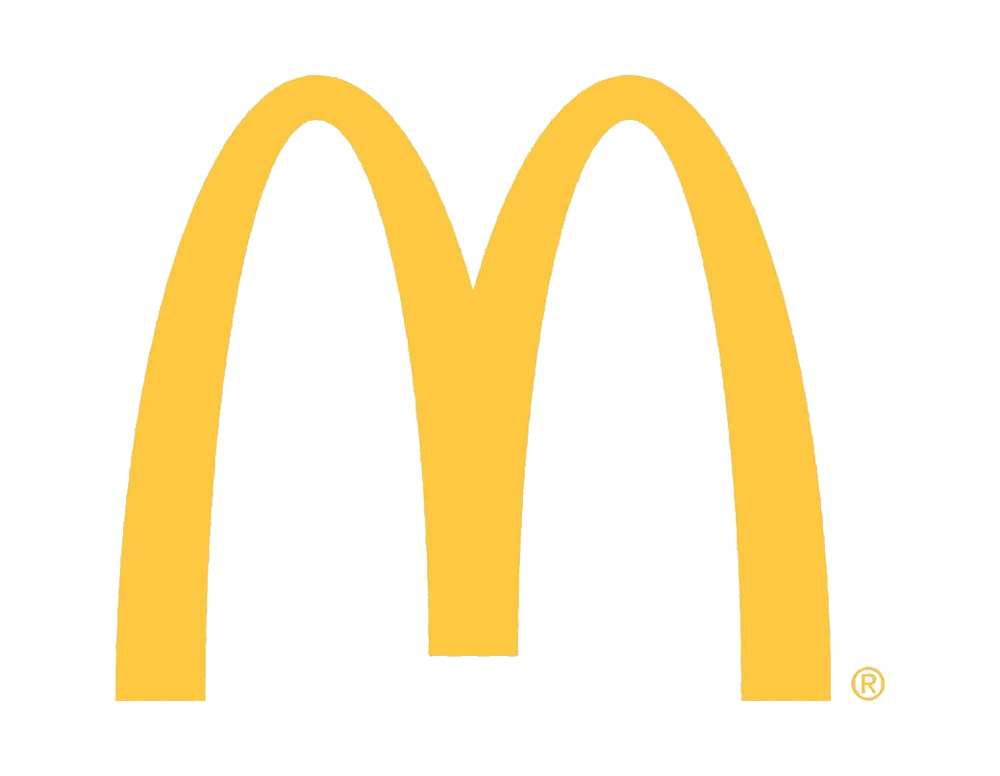
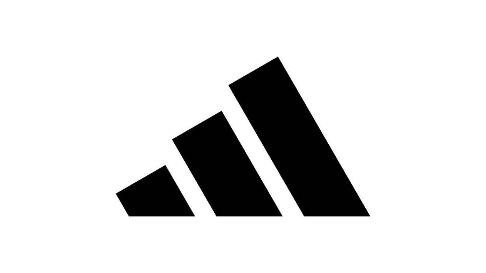
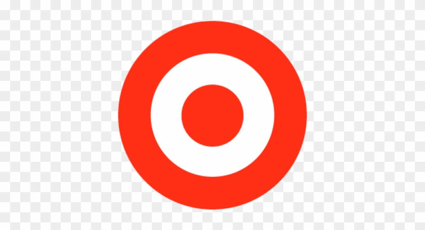
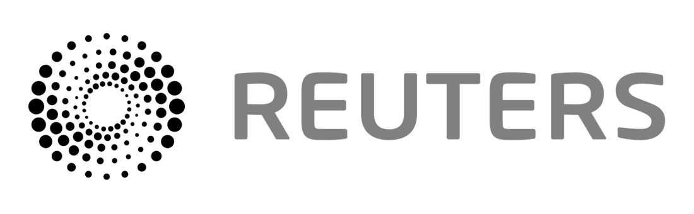
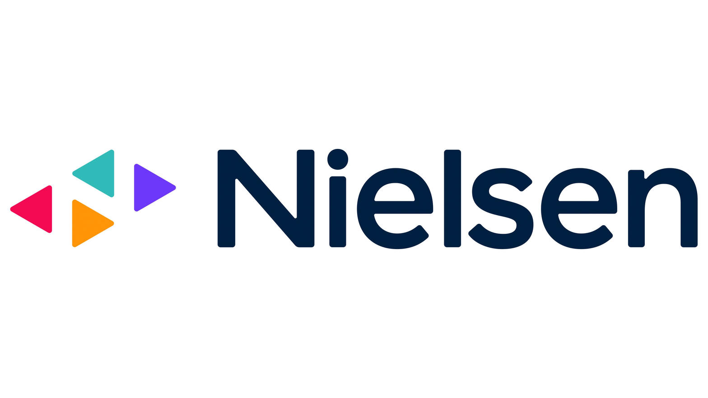
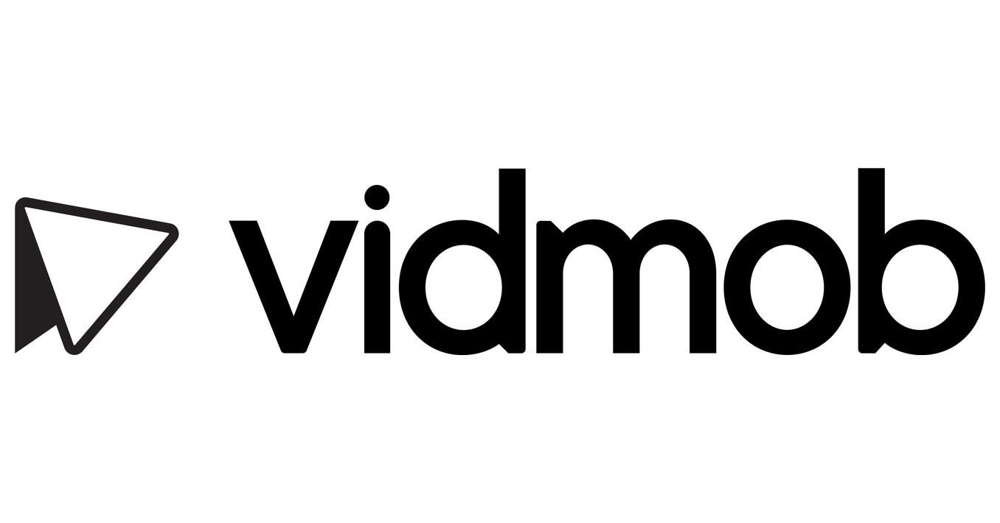
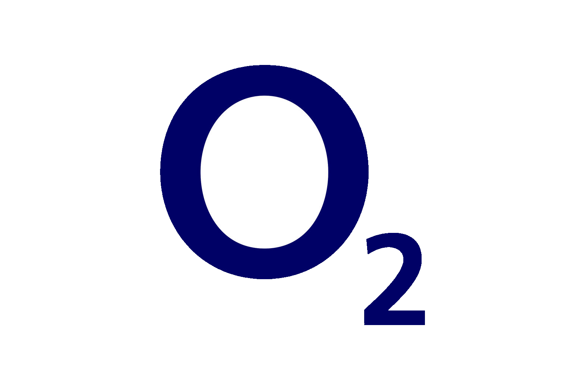
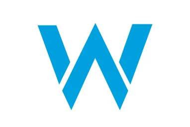
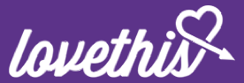

14 years remote-first collaboration.
Bilingual (British & American English).
TECHNOLOGIES
Ruby on RailsAlpine.jsHotwire NativePostgreSQLBigQueryRedisSidekiqStripeTailwindRSpecGitHub ActionsClaude CodeCursorOllamaCrewAI
Read moreRead more
PROFESSIONAL EXPERIENCE

Happity
Senior Software Engineer - 2025 - Present
• End-to-end delivery of booking widget, provider onboarding & promoted listings ads
• Introduced BigQuery analytics pipeline + major performance & observability gains
• Integrated Claude Code as a daily coding assistant, writing a comprehensive codebase guide to improve AI output quality, and built custom skills for prompt generation and automated staging deployments
• Shipped GitHub Actions workflows to automate Jira ticket transitions on PR approval
Read moreRead more
Black Square Media
Senior Software Engineer (13 years) - 2012 - 2025
• High-throughput Go ad services for Verve & Infectious (Netflix, McDonald’s, Adidas)
• Rebuilt Verve Location Services (VLS) in Go - ultra-fast device/location engine
• Reuters.tv video pipeline (DASH/HLS) + Nielsen scoring (10% → 80% match rate)
• VidMob ETL pipelines via Databricks integrating 6+ major ad platforms
Key clients:






Read moreRead more
Rawnet
Lead Web Developer - 2010 - 2012
• Led multi-tenant platforms for BBC Insight, O2, Williams F1, Jordan Publishing
• Created & open-sourced several Rails gems still used today
Key clients:



Read moreRead more
AOLAOL Advertising
Systems Developer - 2007 - 2010
• Part of 4-man UK innovation team (SCRUM) delivering European multilingual apps
• Built large-scale REST reporting, creative testing & sales dashboards
Read moreRead more
Debatewise
Lead Developer - Freelance - 2006 - 2007
• Built proof-of-concept app, then architected social features & scalable platform
• Freelance lead on balanced debate discussion site
Read moreRead more
SIDE PROJECTS
Rehearse.app2014-Present
11+ year booking platform for rehearsal studios. Rails 8, complex availability & SumUp iOS payments via Hotwire Native.
Rails 8 • Hotwire Native • Swift • Cursor
Read moreRead more
Driver First Assist2018-Present
Charity first-aid training site. Automated toolkit ordering + self-documenting test suite with screenshot guides.
Rails • Hotwire • RSpec • Render
Read moreRead more
Accredit (AIMS-PICU)2020
NHS mental health accreditation evidence system. Digital upload & assessor review. Featured in RCPsych newsletter.
Rails 7 • Kamal 2 • PostgreSQL
Read moreRead more
BSc Music Technology (2:2) - Birmingham City University
•
Apple Certified Final Cut Pro (97%)
•
Full UK Clean Driving Licence • Remote-first since 2012
Happity is a platform connecting parents with baby and toddler classes across the UK, serving both class providers and the families who book them.
Product delivery
Led end-to-end delivery of multiple features on the Ruby on Rails platform, including an embeddable third-party booking widget, a provider onboarding pre-approval system, and a promoted listings advertising product. Overhauled newsletter infrastructure, introduced a BigQuery analytics pipeline, and significantly improved platform performance and observability.
AI-assisted development
Used Claude Code as a daily coding assistant, writing a comprehensive CLAUDE.md codebase guide to give the AI deep context on conventions, architecture, and patterns, significantly improving the quality of AI-generated code.
Built custom Claude skills for the team that generate Happity-specific prompt templates for starting new tasks, and that automate the merge, conflict resolution, and deployment workflow as well as GitHub Actions workflows to automate Jira status checks on PRs and auto-transition tickets.
Day to day
Day-to-day this meant touching everything from database design and background jobs through to frontend interactions and third-party integrations, working closely with a small team to ship features to a tight product roadmap.
Black Square Media grew from a team of 4 in 2012 to a team of 7 at its peak. We built and operated services supporting some of the biggest brands in the world including; Target, Nissan, McDonalds, Netflix, Adidas and Expedia.
Ad platforms
For the majority of my time at Black Square, I was building various ad-support services for two main Clients, Verve Mobile and Infectious Media.
Both of these companies needed high throughput advertising solutions (built using Go), order management systems (built using Ruby on Rails and AngularJS) and integrations with ad server platforms such as Google Ad Manager (formerly DFP).
Verve Location Services
One service I'm particularly proud of is Verve Location Services (VLS), it is at the core of a Verve Mobile's location offering. Originally built in Lua, then rebuilt in Go, VLS is blisteringly fast at taking minimal user and device information, analysing it and calculating the precise location and quality of the request.
VLS uses data from various sources (DeviceAtlas, OpenStreetMap, MaxMind, NetAcuity etc.) to extract device information, network level accuracy and physical address (even weather). It also acts as a user store, allowing accurate home/work location tracking as well as segmentation and audience matching.
Reuters.tv video pipeline
I developed a video conversion and packaging pipeline for Reuters.tv (part of Thomson Reuters). To enable them to normalise ads served on their site and inside their apps, and allow the most efficient streaming possible, they required any video ad used to be transcoded to several variants of differing qualities then all packaged into both an MPEG-DASH and an HLS format.
Nielsen metadata pipeline
We worked for Nielsen on a data ingestion, scoring and fixing pipeline in Go. It took huge CSVs of video and audio metadata from various platforms and apps and, using the GracenoteDB, matched program titles to known data.
The pipeline improved the accuracy and speed of the system phenomenally, it went from a 10% to an 80% match rate and from one file ingestion taking several hours to just minutes.
VidMob analytics integration
Most recently, we worked with VidMob integrating with their Ad partner platforms e.g. Facebook, Snapchat, Reddit, Pinterest, LinkedIn and Google Ad Manager (formerly DFP), to pull in dimension, metric and analytics data from their APIs and transform it and push it into various databases. Primarily this used a combination of Go services Fetch and State and a Platform Handler written in TypeScript, then the pipeline was executed via a Workflow in Databricks.
O2 Profiler - Self profiling/assessment tool for O2 employees
Jordan Publishing - Internal CRM and iPad app for solicitors to look up case history in court.
AT&T Williams/Williams F1 - Various on-going updates to their sites, prototyping an iPhone app.
O2 Recruitment Game - A pre-CV recruitment tool for O2
Craster.com - A revamp of a rather drab product site
CBS Planning Platform - Tree-based profit forecasting tool
Internal tools and open source
In addition to the above projects we developed a lot of internal code that helped generate new apps quickly or build standard CMSs.
Some of this work was open sourced, but most remains in private repositories or often just supporting sunset products.
redis-column gem - stores heavy objects away from tables with a lot of rows
dynamic-fields gem - automatic migrations for ActiveRecord
oa-google-and-yahoo gem - OmniAuth for Google and Yahoo
contact-list gem - Multi-provider contact list via OmniAuth
Precious Gems - A pseudo-framework for building apps rapidly, initially deployed with OWL Group projects, a modular gem system using my dynamic-fields gem to extend themselves and model functionality, precious-tagging, precious-friendships, etc..
Technologies/Languages
Ruby, HTML, HAML, XML, CSS, JavaScript, CoffeeScript, MySQL
Frameworks/Libraries
Ruby on Rails, jQuery, BackboneJS, RSpec, Cucumber, Titanium
AOL Advertising (Formerly Advertising.com), had one of the largest advertising networks in the world. Their operation for the U.S market was maintained by a large team in the U.S, whereas our small four-man team was based in the UK and hired to drive innovation for Europe. We used agile methodologies (SCRUM) to create and iterate on multilingual applications for the entire European business - later these applications and processes would be used as the basis for optimising the U.S team.
Applications delivered
These applications included; Email based request queuing and creative testing services (decompiling flash files and checking click tags, parsing html and JavaScript page inserts for malware and verifying image file metadata);
Large scale, client facing, multi-lingual REST based reporting services (both Service and Client);
Debatewise is a website where people discuss topics and formulate a balanced debate.
I successfully created a basic proof of concept application and was then offered a role architecting and developing the extra, social aspects of the site, as well as designing a more scalable platform.
Technologies/Languages
Ruby, HTML, CSS, JavaScript
Frameworks/Libraries
Ruby on Rails, Prototype JS, RSpec
December 2014 - Current·Solo Dev
Overview
Background
A side project brought about by a local rehearsal studio not having a booking system, I reached out to the then owner Josh and I started building Rehearse around his needs.
Rehearse Pay
11+ years and 2 owners later, Rehearse is still going strong and now has Rehearse Pay, an iOS integration for customer in-person payments. It's a hybrid Hotwire Native app that uses the SumUp SDK to take payments and mark sessions as paid.
Recent upgrades
In the last six months I upgraded Rehearse to Rails 8 with ongoing feature work; Cursor is my day-to-day coding environment for the project.
Platform and demo
The main website has built up a lot of features over the years including complex timeslots, restrictions and availability. There's extensive SQL for converting these into a time series for use in the booking grid. An example account is available at https://test-flight.rehearsal.studio/
Technologies/Languages
Ruby, HTML, HAML, XML, CSS, JavaScript, Redis, PostgreSQL, Swift
Helping a family friend out with his charity which has trained over 1500 people in first aid.
Application
The project consists of a manager which has a section for Trainers to see their upcoming courses and their attendance, and a Members section where they can see their courses and order a toolkit.
Toolkit ordering
Instead of manually ordering a toolkit for each member, the site allows for members to select their size and enter their postal address and it will use Mechanize to automatically log in, select a toolkit size, enter their address and submit the order.
Documentation
The customer-facing documentation is something I'm very proud of. I piggybacked the system tests, adding JavaScript helpers and using CSS to highlight areas of the screen, then automatically took screenshots after each successful test, combining these images in markdown. This was then processed into HTML with the generated images being cropped, using imagemagick, so only the highlighted areas are included in the documentation. This all happened post successful test time, so new documentation is available after each feature is added - a public-accessible section can be seen here: https://secure.driverfirstassist.org/help/clients/courses.html
This approach has since been extracted into DRYDoc (Don't Repeat Yourself Documentation) gems.
Helping my wife with her Accreditation for AIMS-PICU, which was an accreditation scheme, working with inpatient mental health services to assure and improve the safety and quality of services and their environments.
Product
At the time there was no way for NHS Mental Health services to collect evidence digitally to submit for accreditation. The idea for the project was to digitise the standards, then to upload evidence for each standard so that Assessors from the Royal College of Psychiatrists (RCPsych) could log in, review and approve the evidence.
Outcome
Unfortunately my wife was driving the project internally and she went on maternity leave halfway through, so while it did help, it never quite got used to its full capacity. It did get a mention in the RCPsych newsletter and a year later when she came back onto the project the RCPsych had built their own version, so I hope it helped in some way. The project, dubbed Accredit, is still up at https://aimsadmin.app with a demo organisation (please ask for demo access), recently updated to Rails 7 and deployed with Kamal 2.
Technologies/Languages
Ruby, HTML, CSS, JavaScript, PostgreSQL, Kamal 2
Frameworks/Libraries
Ruby on Rails, Hotwire (Turbo, Stimulus), Bootstrap, RSpec, Kamal 2